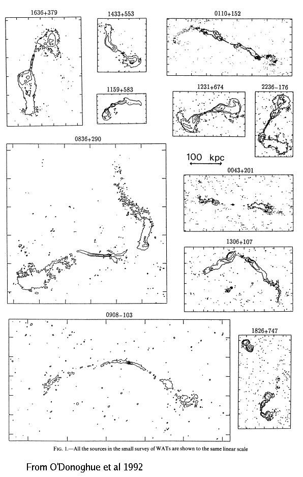

What's a WAT?
WAT stands for "wide-angle-tailed" radio galaxy. These beasts are associated with supergiant (sometimes cD) galaxies in clusters of galaxies. Their radio power is intermediate between FRI and FRII sources. Their appearance in radio maps is characterized by a bright core producing two, well-collimated jets which disrupt at hot-spots into more diffuse "tails". The tails show slight bending - not as extreme as the HT (head-tail) or NAT (narrow-angle tailed) varieties. The tails and jets emit radio waves by synchrotron radiation - electrons and protons spiraling around magnetic fields.
Below is a collection of WATs imaged by the VLA at 20cm from a paper by O'Donoghue et al.
